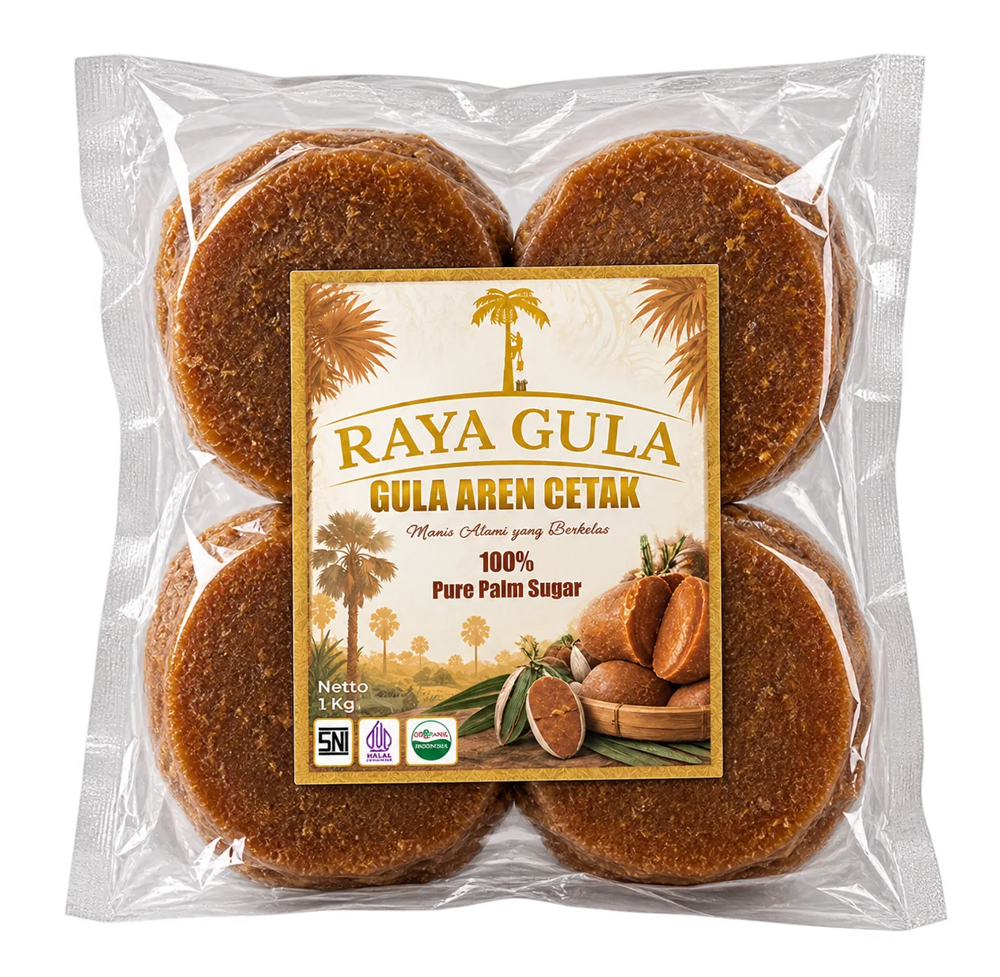

Gula Aren CetakMoulded Palm Sugar
Gula aren cetak untuk resep tradisional maupun modern. Berat, bentuk, dan pilihan kemasan perlu dikonfirmasi.Moulded palm sugar for traditional and contemporary recipes. Weight, shape, and packaging options are to be confirmed.
Informasi produkProduct information
Bentuk & penggunaan:Form & uses: Gula aren berbentuk padat untuk minuman tradisional, masakan, kue, dan resep Nusantara.Solid palm sugar for traditional beverages, cooking, cakes, and Indonesian recipes.
Kemasan:Packaging: Pilihan kemasan dan pelindung luar disesuaikan dengan bentuk produk serta kebutuhan pengiriman; detailnya perlu dikonfirmasi.Packaging and outer protection are selected according to product shape and shipping needs; details require confirmation.
Masa simpan & penyimpanan:Shelf life & storage: Masa simpan dan kondisi penyimpanan khusus produk perlu dikonfirmasi pada label atau dokumen produk.Product-specific shelf life and storage conditions should be confirmed from the label or product documents.
Detail bisnis:Business details: Berat per keping, dimensi, jumlah per kemasan, MOQ, kapasitas tersedia, dan opsi private label dikonfirmasi saat inquiry.Unit weight, dimensions, pieces per pack, MOQ, available capacity, and private-label options are confirmed during inquiry.
RAYA GULA · PRODUCT GUIDE
Panduan Produk: Gula Aren CetakProduct Guide: Moulded Palm Sugar
Gula aren cetak berbentuk padat dan sering digunakan dalam berbagai resep tradisional Indonesia. Produk ini dapat digunakan untuk minuman hangat, saus, kue, kudapan, dan masakan rumahan.Moulded palm sugar comes in a solid form often used in traditional Indonesian recipes. It can be added to warm drinks, sauces, cakes, snacks, and home-cooked dishes.
Potong atau serut sesuai kebutuhan resep. Bila perlu, larutkan dengan cairan hangat dan tambahkan bertahap untuk menyesuaikan rasa manis dengan bahan lainnya.Cut or shave it according to the recipe. If needed, dissolve it in warm liquid and add gradually to balance sweetness with the other ingredients.
Untuk pembelian grosir atau ekspor, konfirmasikan bentuk dan berat per unit, komposisi, jenis kemasan, MOQ, masa simpan, petunjuk penyimpanan, dan ketersediaan. Jangan mengasumsikan spesifikasi atau sertifikasi sebelum dokumen SKU diperiksa.For wholesale or export orders, confirm shape and unit weight, ingredients, packaging, MOQ, shelf life, storage instructions, and availability. Do not assume specifications or certification before reviewing documents for the relevant SKU.
Informasi untuk pembelianPurchasing information
Spesifikasi teknis, MOQ, kapasitas, masa simpan, dan dokumen sertifikasi harus dikonfirmasi untuk produk yang dipesan.Technical specifications, MOQ, capacity, shelf life, and certification documents must be confirmed for the product being ordered.
Tanyakan spesifikasi kepada tim Raya GulaAsk the Raya Gula team for specifications ↗